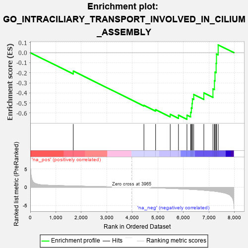
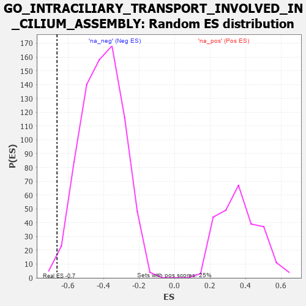

| | | Dataset | 7d |
| Phenotype | NoPhenotypeAvailable |
| Upregulated in class | na_neg |
| GeneSet | GO_INTRACILIARY_TRANSPORT_INVOLVED_IN_CILIUM_ASSEMBLY |
| Enrichment Score (ES) | -0.6622306 |
| Normalized Enrichment Score (NES) | -1.6227903 |
| Nominal p-value | 0.010723861 |
| FDR q-value | 0.07783915 |
| FWER p-Value | 1.0 |
Table: GSEA Results Summary

Fig 1: Enrichment plot: GO_INTRACILIARY_TRANSPORT_INVOLVED_IN_CILIUM_ASSEMBLY
Profile of the Running ES Score & Positions of GeneSet Members on the Rank Ordered List
| PROBE | GENE SYMBOL | GENE_TITLE | RANK IN GENE LIST | RANK METRIC SCORE | RUNNING ES | CORE ENRICHMENT | | 1 | TNPO1 | | | 1684 | 0.359 | -0.1827 | No |
| 2 | KIF3B | | | 4450 | -0.085 | -0.5235 | No |
| 3 | IFT43 | | | 4907 | -0.179 | -0.5663 | No |
| 4 | KIF3A | | | 5480 | -0.313 | -0.6129 | No |
| 5 | IFT46 | | | 5802 | -0.406 | -0.6205 | No |
| 6 | IFT80 | | | 6135 | -0.515 | -0.6207 | Yes |
| 7 | IFT52 | | | 6280 | -0.566 | -0.5931 | Yes |
| 8 | IFT57 | | | 6307 | -0.579 | -0.5496 | Yes |
| 9 | IFT88 | | | 6335 | -0.590 | -0.5053 | Yes |
| 10 | IFT27 | | | 6348 | -0.596 | -0.4586 | Yes |
| 11 | IFT22 | | | 6400 | -0.617 | -0.4152 | Yes |
| 12 | WDR19 | | | 6796 | -0.812 | -0.3992 | Yes |
| 13 | WDR60 | | | 7153 | -1.038 | -0.3601 | Yes |
| 14 | IFT74 | | | 7211 | -1.085 | -0.2796 | Yes |
| 15 | WDR34 | | | 7233 | -1.103 | -0.1932 | Yes |
| 16 | IFT81 | | | 7277 | -1.151 | -0.1056 | Yes |
| 17 | KIF17 | | | 7291 | -1.160 | -0.0136 | Yes |
| 18 | WDR35 | | | 7357 | -1.225 | 0.0772 | Yes |
Table: GSEA details [plain text format]

Fig 2: GO_INTRACILIARY_TRANSPORT_INVOLVED_IN_CILIUM_ASSEMBLY: Random ES distribution
Gene set null distribution of ES for GO_INTRACILIARY_TRANSPORT_INVOLVED_IN_CILIUM_ASSEMBLY